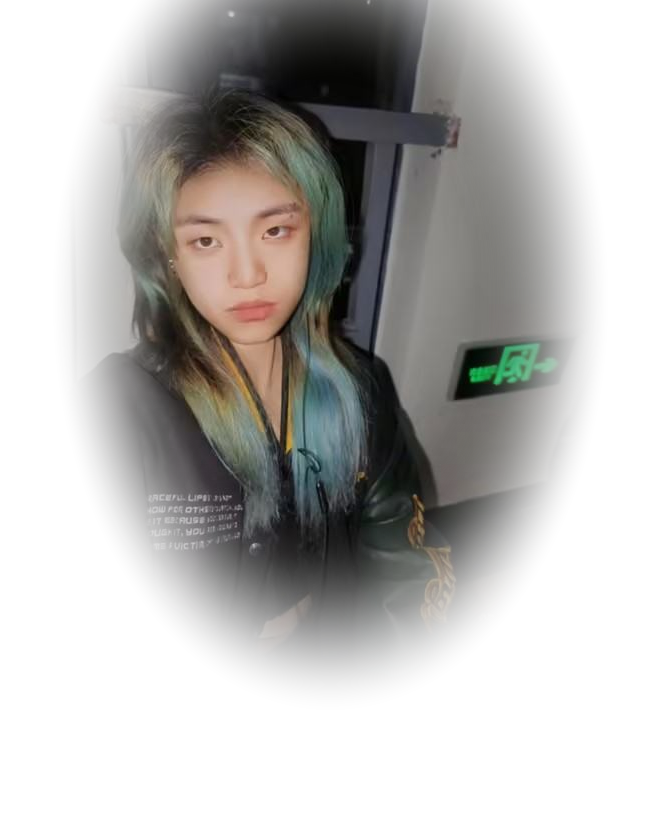

01 / CORE
美术功底扎实
多年美术经验，设计认知扎实，热衷探索视觉与体验的平衡。
01 — HELLO / 你好
福州大学 · 数字媒体艺术 · 2026 届。擅长 UI、三维、动效与插画等多风格设计， 关注视觉与体验之间的平衡，可独立完成项目全流程。

UI 设计师
02 — THE JOURNEY / 工作经历
个人经历 / 每一段经历都在形成现在的我
游戏 UI 设计师
2026.07 — 至今
UI 设计师
2026.01 — 2026.07
UI 设计师
2025.10 — 2026.01
UI 设计师
2025.09 — 2025.10
网页设计师
2025.04 — 2025.09
视觉设计师
2025.02 — 2025.06
UI 设计师
2023.10 — 2023.12
视觉设计师
2023.09 — 2023.10
教育经历福州大学（211）· 数字媒体艺术 · 2022.9 — 2026.6
03 — THE PRACTITIONER / 作品
九组项目 · 从用户调研、视觉方案到最终落地。点击封面进入完整项目。
下载完整作品集 · PDF 65 页 · 网页浏览版
04 — WHAT I DO BEST / 个人优势
01 / CORE
多年美术经验，设计认知扎实，热衷探索视觉与体验的平衡。
02 / CORE
擅长三维、动效、插画等多风格设计，注重实用性。
03 / CORE
沟通协作能力强，学习高效，可独立完成项目全流程设计。
软件技能界面设计 · AIGC 运用 · 三维建模 · 动效设计 · 用户体验
兴趣爱好绘画 · 剪辑 · 建模 · 唱歌
05 — CAMPUS / 校园经历
教育经历
福州大学 211
数字媒体艺术
2022.9 — 2026.6
荣誉奖项
校园职位
06 — CONTACT / 联系
欢迎通过邮件、电话或微信联系我，聊聊新的项目、工作机会与创意想法。